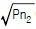
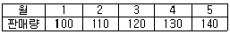
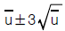
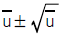
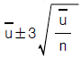
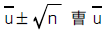

제강기능장 (2002-07-21 기출문제)
1과목: 임의 구분
1. 제강에서 쓰이는 강재의 기능을 설명한 것 중 틀린 것은?
- 로내 분위기로부터 산소, 기타 가스에 의한 오염을 방지 한다.
- Fe 등 기타 유용원소 손실을 크게 하는 역할을 한다.
- 산소를 운반하는 매개체로 산화철을 보유하고 있다.
- P, S 등 유해성분을 제거해 준다.
(정답률: 91%)

2. 용강에 첨가해서 밀도와 점성을 동시에 낮추는 원소는?
- Mn
- Cu
- Co
- Ni
(정답률: 79%)
3. 강재의 성분구성을 구분한 것 중 틀린 것은?
- 염기성 산화물: Al2O3, 양성 산화물 : P2O5
- 염기성 산화물: Na2O, 산성 산화물 : SiO2
- 염기성 산화물: MnO, 양성 산화물 : Al2O3
- 염기성 산화물: CaO, 산성 산화물 : SiO2
(정답률: 84%)
4. 강재의 산화력을 가장 바르게 설명 한 것은?
- 산성 강재에서는 대부분의 FeO는 2FeO· SiO2 로써 존재하므로 그 산화력은 약하다.
- 산성 강재에서는 대부분의 FeO는 2FeO· SiO2 로써 존재하므로 그 산화력은 강하다.
- 산성 강재에서는 대부분의 FeO는 2FeO· CaO 로써 존재하므로 그 산화력은 약하다.
- 산성 강재에서는 대부분의 FeO는 2FeO· CaO 로써 존재하므로 그 산화력은 강하다.
(정답률: 74%)
5. 제철 조업에서 유동성이 가장 좋은 것은?
- 규석
- 석회석
- 산화마그네슘
- 형석
(정답률: 77%)
6. 용선에만 사용되고 용강에는 기화하므로 이용 할 수 없는 탈황제는?
- Ca
- Mn
- Na
- Mg
(정답률: 80%)
7. 염기성 강재 중 가장 유동성을 저해시키는 성분은?
- P2O5
- CaO
- SiO2
- FeO
(정답률: 70%)
8. 용철에서 질소의 용해도는 질소의 분압(Pn2)과 질소의 활동도 계수에 미치는 제3원소의 영향(fn(J))에 달라진다. 다음의 설명 중 옳게 표현된 것은?
- 용해도는
 에 비례하여 증가하고 용해도를 증가하는 원소들은 fn(J)를 높인다.
에 비례하여 증가하고 용해도를 증가하는 원소들은 fn(J)를 높인다. - 용해도는 Pn2에 비례하여 커지고 용해도를 증가하는 원소들은 Fn(J)를 감소한다.
- 용해도는

에 비례하여 증가하고 용해도를 감소하는 원소들은 Fn(J)를 높인다. - 용해도는 Pn2에 비례하여 커지고 fn(J)를 높이는 원소들은 용해도를 감소한다.
(정답률: 78%)
9. 슬랙에 의한 용철의 탈황반응을 이온적으로 옳게 표시한 것은?
- O2- + S → S2- + O
- Ca2+ + S2- → CaS
- O + S2- → S + O2-
- S2+ + 2O2- → SO2
(정답률: 69%)
10. 산소 전로에서 각종 원료 장입순서가 옳은 것은?
- 고철-생석회-고철-산소분사-철광석, 형석
- 용선-고철-산소분사-생석회, 철광석, 형석
- 고철-용선-산소분사-생석회, 철광석, 형석
- 용선-고철-생석회, 철광석-산소분사-형석
(정답률: 72%)
11. 용강에 Cu, Ni, Mo와 같은 합금원소를 첨가하기 위해서는 산소전로 취련의 어느 시기에 이들의 합금철을 첨가하는 것이 좋은가?
- 산소 취련전에 첨가한다.
- 취련이 끝난 후 전로내에 첨가한다.
- 수강전의 레이들에 미리 첨가하여 놓는다.
- 출강 중 레이들에 첨가한다.
(정답률: 86%)
12. 전로 제강법에 대한 설명 중 옳은 것은?
- 주 원료로 고철을 70%이상 사용한다.
- 열원으로 외부에서 공급되는 C, S 등이 사용된다.
- 정련시간은 노의 용량에 크게 관계하여 일반적으로 60분 정도 걸린다.
- 산화반응에 의해 용강을 정련한다.
(정답률: 67%)
13. 산소전로내의 강재는 어떠한 역할을 하며 염기도는 어느 정도인가?
- 강욕보호, 산화작용, 염기도 = 1.2-1.5
- 탈산, 탈린, 탈황, 염기도 = 1.5-2.0
- 탈산, 탈규소, 탈망간, 탈린, 탈황,염기도 = 2.0-2.5
- 탈인, 탈황, 염기도 = 3.5-4.5
(정답률: 74%)
14. 다음 중 진정강은?
- 캪드강
- 킬드강
- 공석강
- 림드강
(정답률: 87%)
15. 조괴작업에서 하주법의 특징으로 맞는 것은?
- 주입속도와 탈산조정이 어렵다.
- 조괴장이 좁다.
- 대량 생산에 적합하다.
- 강괴 표면이 깨끗하다.
(정답률: 78%)
16. 강괴의 조직을 좋게 하기 위해 단면적을 크게 하고 높이는 낮게 해야 한다. 분괴압연용 대강괴에서 강괴높이는 두께의 몇 배로 하는 것이 좋은가?
- 1배
- 2.5-3.5배
- 5-6배
- 8-10배
(정답률: 87%)
17. 전기전도도가 가장 큰 것은?
- 탄소전극
- 흑연전극
- Sorder berg전극
- 코크스전극
(정답률: 80%)
18. Stainless강 제조법에서 가장 널리 이용되고 있는 AOD법과 VOD법을 비교한 것 중 맞는 것은?
- VOD법은 탈황 성분조정에 유리하며 AOD법은 정련 후 출강 때 공기오염에 대하여 유리하다.
- AOD법은 진공설비가 있으며 VOD법은 건설비가 AOD법보다 싸다.
- AOD법은 고탄소 용강으로 부터 신속한 탈탄과 탈황이 가능하므로 생산성은 VOD법 보다 크다.
- VOD법은 Stainless강의 제조에만 이용되나 AOD 법은 각종 강종에 적용할 수 있다.
(정답률: 68%)
19. 전기로조업은 원료의 상태, 산화정련의 정도, 환원정련의 정도 등에 따라 각각 두 가지의 형태가 있다. 일반적으로 채택되고 있는 조업법은 어떤 형태인가?
- 염기성, 냉재, 일부산화법, 1회강재법
- 염기성, 냉재, 일부산화법, 혼재법
- 염기성, 냉재, 완전산화법, 1회강재법
- 염기성, 냉재, 완전산화법, 2회강재법
(정답률: 72%)
20. 연속주조에 있어서 강편의 표면균열 발생에 관한 설명 중 잘못된 것은?
- 표면균열은 슬라브의 경우 넓은 면에 발생한다.
- 각형 빌레트의 경우 표면균열은 빌레트 전표면에 발생한다.
- 표면균열은 냉각강도가 클수록 발생률이 높다.
- 테이퍼(Tape) 주형을 사용하면 표면균열 발생률이 낮아진다.
(정답률: 70%)
2과목: 임의 구분
21. 연속주조의 Powder casting에서 많이 쓰이는 Powder의 주성분은?
- Al2O3-MgO-CaO
- Al2O3-SiO2-CaO
- Al2O3-FeO-SiO2
- Al2O3-FeO-MgO
(정답률: 79%)
22. H를 Heat size라 할 때 주조능률 P는 kH/(k× 주조시간+tp)로 표현되는 식에서 k와 tp는 각각 무엇에 해당되는가?
- 비례상수, 준비시간
- 레이들의 갯수, 대기시간
- 턴디쉬의 갯수, 대기시간
- 레이들의 갯수, 준비시간
(정답률: 74%)
23. 진공탈가스법에 의한 탈질소에 관하여 기술한 것 중 잘못된 것은?
- 진공탈가스에 의한 탈질소율은 10-20% 정도이다.
- 미탈산의 경우는 탈질소 효과가 촉진된다.
- Mn, Cr 등의 존재는 탈질소 효과를 촉진한다.
- 탈질소 반응속도는 탈수소의 경우보다 낮다.
(정답률: 50%)
24. 탈인반응의 촉진을 저해하는 것은?
- 강재(Slag)의 염기도가 높을 때
- 강욕(鋼浴)의 온도가 높을 때
- 강재중의 P2O5 가 낮을 때
- 강재의 유동성이 좋을 때
(정답률: 76%)
25. 킬드강에 관한 설명 중 틀린 것은?
- Rimming action으로 인하여 편석이 적다.
- 강 표면은 비교적 순도가 높다.
- 가스일부가 강괴표면에 가까운 곳에 집합한다.
- 판, 봉 등과 같이 표면상태가 우수한 것을 요구하는데 사용한다.
(정답률: 70%)
26. 연속주조 설비와 관련된 사항 중 잘못 기술된 것은?
- 턴디쉬로부터 용강유량 조절에 사용되는 슬라이딩 노즐방식은 고장이 적고 유량 조절이 쉽다.
- 연주기의 형식에는 수평형,수직형,만곡형 등이 있다.
- 침적 노즐을 사용하는 목적은 주조능력을 향상 하는데 있다.
- 진동구동장치는 용강이 주형벽에 부착하는 것을 방지하기 위한 것이다.
(정답률: 66%)
27. 노외 정련 중 Ladle bubbling의 목적이 아닌 것은?
- 탈수소처리
- 성분균일화
- 온도균일화
- 개재물 분리부상
(정답률: 79%)
28. 전기로 제강법의 이점 중 틀린 것은?
- 재료의 제약이 적다.
- 전력, 내화물의 원단위가 전로보다 적다.
- 유가금속의 회수가 용이하다.
- 고온이 쉽게 얻어진다.
(정답률: 80%)
29. 호이슬러 합금(Heusler's alloy)의 주 성분으로 맞는 것은?
- Fe - Ni - Co
- Aℓ - Au - Fe
- Cu - Mn - Aℓ
- Sb - Hg - Ag
(정답률: 65%)
30. 강에 인성(toughness)을 부여하고 불안정한 조직의 안정을 위한 가장 적합한 열처리 작업은?
- 표준화
- 풀림
- 담금질
- 뜨임
(정답률: 70%)
31. 강의 성질에 미치는 각 원소의 영향을 기술한 것 중 잘못된 것은?
- C:일반적으로 C의 함유량이 많을수록 경도와 강도는 높아지고 신장율은 낮아진다.
- Si:경도와 강도를 크게 하며, Si 1%의 증가에 따라 인장강도는 약 10Kgf/mm2 증가한다.
- Mn:강도와 인성을 높이며, S의 해(害)를 방지 한다.
- S:유익한 원소로써 냉간가공시 강을 강하게 한다.
(정답률: 73%)
32. 철에 Cr,Ni을 첨가한 강으로써 페라이트,마텐자이트형, 오스테나이트형, 석출경화형이 있는 강의 종류는?
- 베어링강(bearing steel)
- 자석강(magnet steel)
- 내식강(stainless steel)
- 내열강(heat resisting steel)
(정답률: 80%)
33. 0.2% 탄소강의 723℃ 선상에서의 초석 α 의 Austenite의 량은? (0.025%C는 무시)
- 약 60 %
- 약 75 %
- 약 85 %
- 약 90 %
(정답률: 74%)
34. Austenite(오스테나이트)안정화 원소는?
- W,MO
- Ni, Mn
- Mo, Ni
- Si, Ti
(정답률: 67%)
35. 안전사고와 관련있는 산업심리학의 5 대 요소에 속하지 않는 것은?
- 감정
- 개성
- 활력
- 습관
(정답률: 75%)
36. 유류화재 발생시 사용할 수 없는 소화기는?
- 주수(注水)소화기
- ABC소화기
- CO2소화기
- 포말소화기
(정답률: 88%)
37. 신 저취 전로법(Q-BOP법)의 특징이 틀린 것은?
- 고철배합율을 상취전로보다 6%정도 높일 수 있다.
- 극 저탄소역에서의 탈탄은 상취전로보다 용이하다.
- 강재의 동일 FeO 수준에 대하여 상취전로보다 탈인이 잘 된다.
- 랜스설비가 필요하므로 건물 높이를 높게한다.
(정답률: 75%)
38. 전로의 TTT(tap to tap)시간은 어느 정도인가?
- 40분
- 1시간
- 12시간
- 24시간
(정답률: 83%)
39. LD전로에서 강욕과 산소가 충돌하여 취련음의 변화와 함께 미세한 철립이 비산하는 현상은?
- 밀스케일(mill scale)
- 분출(over flow)
- 연취련(soft blow)
- 스피팅(spitting)
(정답률: 85%)
40. LD 전로에서 탈탄 속도가 가장 빠른 시기는?
- 제 1기
- 제 2기
- 제 3기
- 말기
(정답률: 72%)
3과목: 임의 구분
41. 열처리용 고급강, 기계구조용강, 단조용강 등에 사용되며 편석은 적고 완전 탈산한 것에 해당되는 것은?
- 림드(rimmed)강
- 캐프드(capped)강
- 세미킬드(Semi-Killed)강
- 킬드(Killed)강
(정답률: 78%)
42. 용강의 탈산방법에 해당되지 않는 것은?
- 용강중의 C 에 의한 탈산
- 침적 탈산
- 확산 탈산
- 석출 탈산
(정답률: 67%)
43. 염기성 및 산성산화물의 설명 중 틀린 것은?
- 염기성 산화물은 O2- 이온을 공급하는 것이다.
- 염기성 산화물은 공유결합을 하며 망상 구조를 형성한다.
- 산성 산화물은 O2- 이온을 받아 배위결합을 하려는 것이다.
- 이온-산소간 인력값이 큰 산성 산화물은 망상구조를 형성하려 하고 인력 값이 작은 염기성 산화물은 망상구조를 파괴한다.
(정답률: 59%)
44. 수소가 강에 미치는 영향 중 가장 많이 나타나는 현상은?
- Flake
- Star crack
- 표면미세균열
- 입계균일
(정답률: 72%)
45. 일반적으로 평형의 조건은 Gibbs의 상율(phase rule)을 이용한다. 상율을 나타내는 식이 f=c-p+e 라면 f는 무엇을 나타내는가?
- 성분수
- 상의 수
- 환경변수(온도, 압력)
- 자유도
(정답률: 82%)
46. 페라이트형 스테인리스강에서 일어나는 취성이 아닌 것은?
- 475℃ 취성
- 150℃ 취성
- γ상 취성
- 고온 취성
(정답률: 67%)
47. 제철소내에서 생산되는 부산물 가스 중 인체에 가장 해롭고 독성이 큰 것은?
- CO2
- CO
- H2
- CH4
(정답률: 85%)
48. 심한 두통 또는 시력장애를 일으키고 의식을 상실하게 하는 온도는?
- 39℃
- 29℃
- 24℃
- 18℃
(정답률: 86%)
49. 기름을 압력 0 에서 200 kgf/㎝2 까지 압축하였을 때 체적은 몇 % 감소하였는가 ? (압축률은 6.8x10-5㎝2/kg)
- 1.25
- 1.36
- 2.54
- 4.62
(정답률: 67%)
50. 유압기기에 사용하는 배관용 관으로 열전도율이 크고 내식성이 우수하며 저압용의 배관에 알맞는 배관용 재료는?
- 동 파이프
- 이중 와이어 브레어드 호스
- 나선 와이어 브레이드 호스
- 직물 브레이드 호스
(정답률: 85%)
51. Auto CAD로 도면작업을 하는 순서 중 가장 먼저 이루어지는 작업은?
- 시스템부팅
- 도면크기 결정
- 도면에 치수기입
- 도면저장
(정답률: 84%)
52. 유압펌프 종류에서 회전식 유압펌프가 아닌 것은?
- Axial piston pump
- Gear pump
- Vane pump
- Screw pump
(정답률: 75%)
53. 압력제어변의 종류가 아닌 것은?
- Relief valve
- Sequence valve
- Safety valve
- Check valve
(정답률: 79%)
54. 안전에 대한 관심과 이해가 인식되고 유지됨으로써 얻을 수 있는 장점이 아닌 것은?
- 직장의 신뢰도를 높여준다.
- 이직율을 감소한다.
- 고유기술이 축적되어 품질이 향상된다.
- 기업의 투자경비를 증가시킬 수 있다.
(정답률: 82%)
55. 공급자에 대한 보호와 구입자에 대한 보증의 정도를 규정해 두고 공급자의 요구와 구입자의 요구 양쪽을 만족하도록 하는 샘플링 검사방식은?
- 규준형 샘플링 검사
- 조정형 샘플링 검사
- 선별형 샘플링 검사
- 연속생산형 샘플링 검사
(정답률: 68%)
56. 표는 어느 회사의 월별 판매실적을 나타낸 것이다. 5개월 이동평균법으로 6월의 수요를 예측하면?

- 150
- 140
- 130
- 120
(정답률: 75%)
57. u 관리도의 공식으로 가장 올바른 것은?




(정답률: 78%)
58. 도수분포표를 만드는 목적이 아닌 것은?
- 데이터의 흩어진 모양을 알고 싶을 때
- 많은 데이터로부터 평균치와 표준편차를 구할 때
- 원 데이터를 규격과 대조하고 싶을 때
- 결과나 문제점에 대한 계통적 특성치를 구할 때
(정답률: 62%)
59. 설비의 구식화에 의한 열화는?
- 상대적 열화
- 경제적 열화
- 기술적 열화
- 절대적 열화
(정답률: 70%)
60. 모든작업을 기본동작으로 분해하고 각 기본동작에 대하여 성질과 조건에 따라 정해놓은 시간치를 적용하여 정미시간을 산정하는 방법은?
- PTS법
- WS법
- 스톱워치법
- 실적기록법
(정답률: 77%)